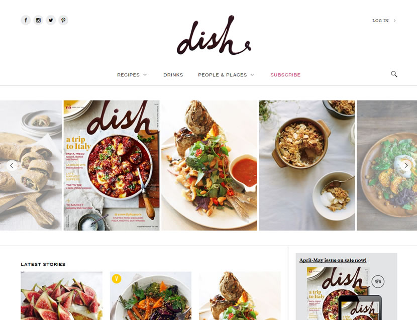
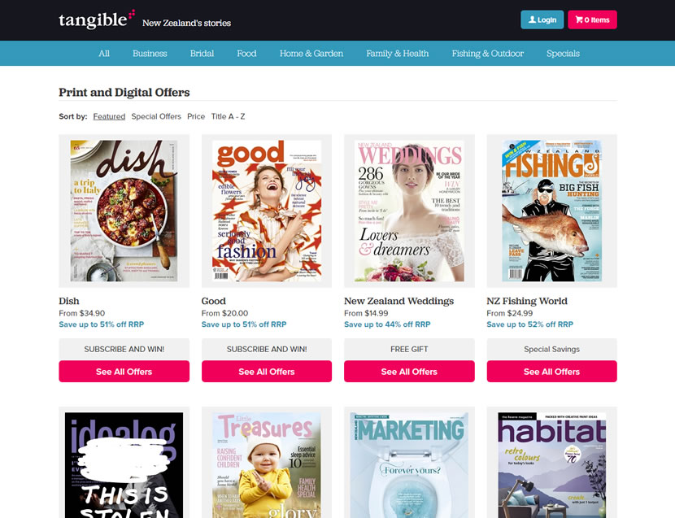
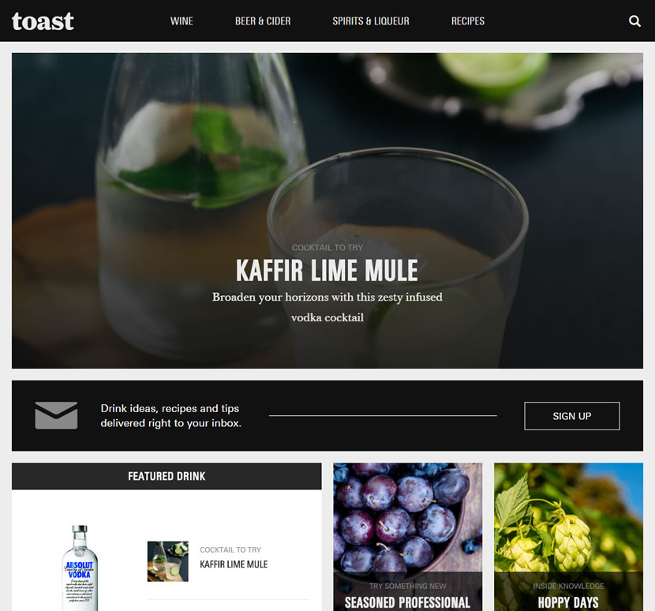
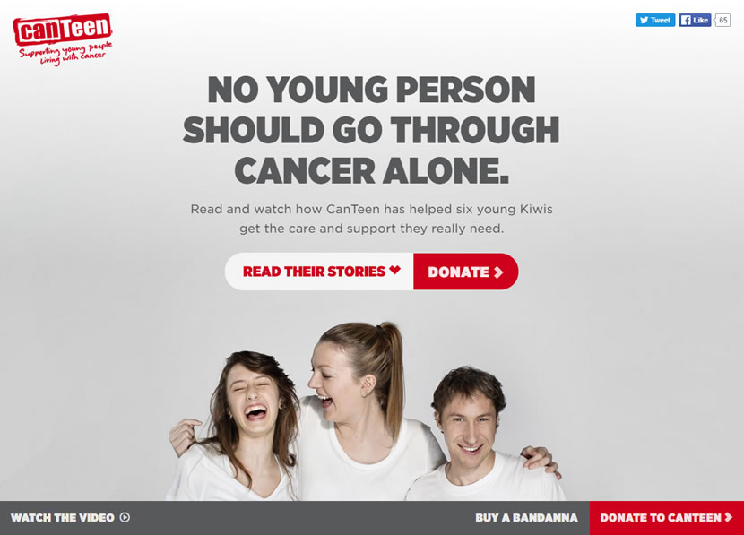
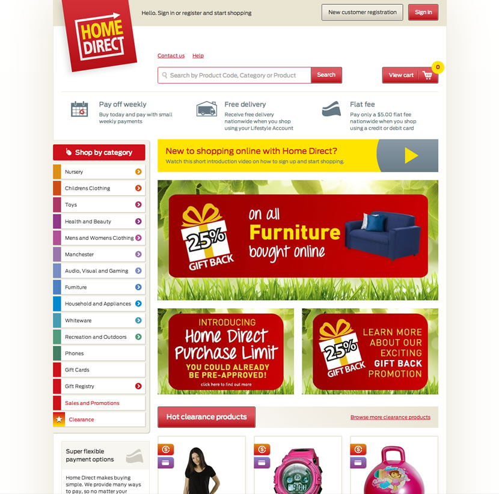
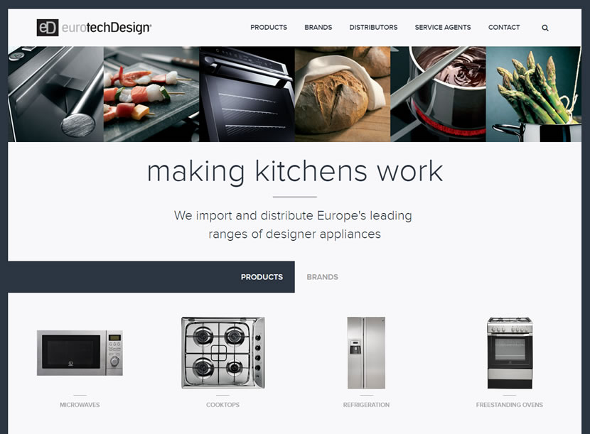
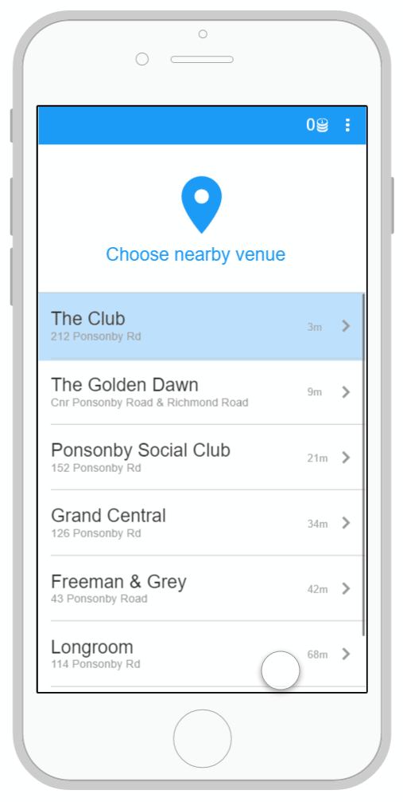

Daniel Fickling
UX/UI Designer & Frontend Developer
I have been designing and developing digital solutions professionaly for 6+ years and tinkering for over a decade.
About
I have been enthralled with the web ever since I was introduced to it. My main drive is to not just design pretty interfaces but to understand business and user problems and from there, design and build beautiful and usable interfaces that solve those problems.
My combination of design and frontend skills has allowed me see problems through from ideation, wireframes, prototypes, design and final build for everything from small marketing sites through to complex e-commerce sites, publishing sites, corporate sites, and mobile apps.
Skills & Expertise
UX/UI
I've worked on projects from intial research through to the creation of personas, user goals and user flows in order to facilitate solutions. I've also built out fully wireframed solutions utilising tools such as Omnigraffle, Balsamiq, UXPin and InVision. Or prototyping I've used Proto.io for mobile apps as well as simple HTML prototypes built using generic frontend frameworks.
Brand Design
Some digital projects have little to no brand guidelines available. In these cases I’ve worked on artifacts to help steer the design direction such as moodboards and style tiles. I’ve contributed to general brand development with competitor analysis, design research, moodboards and style guides.
Frontend Development
I strive to use modern tools and processes in order to create readable, systematic and extendable code. I predominantly utilise BEM methodology and mobile first principles while coding in SASS and HTML5.
Design and Frontend Facilitation
I’ve worked with other designers to provide critical feedback on details of design that could be problematic for users and/or developers and to help them create the appropriate artifacts for developers to work with. I’ve worked closely with developers to ensure they understand the designs and functionality while identifying potential problems and negotiating solutions.
Work
Interaction Designer and Frontend Developer - ICG August 2011 - Present
Key Achievements
Bringing to life the potential of digital subscriptions with the rebuild of Dish and Tangible, creating a future-proof platform for further digital expansion of Tangible titles. Creating a meaningful component to a charitable organisation that positively impacted thousands of people.
Key Responsibilities
Wireframing and designing digital solutions under often tight timelines and budgets. Working with the wider development and design teams to ensure digital work is produced in ways that work for development, users and product owners. Building the frontend of websites and ensuring that the tools and processes for frontend are consistent and to a high standard.
Dish
Worked closely with internal publishing team to understand audience and business requirements. Collaboratively worked on IA structure, wireframes, user-flows and facilitated Art Director in design. Worked with other frontend developers to implement frontend of site.

Tangible Media
Contributed to developing wireframes of the purchase flow and account management sections of the Tangible SMS, with careful attention to allowing ease of use while ensuring compatability for multiple scenarios of purchase and subscription management by customers. Designed the frontend of the site.

Toast
Worked with internal publishing team to redevelop existing Toast website to align with new branding, while introducing improved linking to parent Liquorland website. Created wireframes, HTML prototype, designed and built frontend.

Never Alone
Worked directly with Canteen to conceptualise the microsite component of the Never Alone national campaign. Worked on wireframes, designs and frontend build.

Home Direct
Collaboratively worked with the internal Home Direct team to understand and interpret the unique, multi-pay ecommerce solution Home Direct offers. Created user flows through the site, from signup through to checkout with key consideration paid to making the complex and multi-faceted process simple and intuitive for customers. Designed and built each page for Home Direct to implement.

Eurotech
Worked with product owner on site requirements. Wireframed, designed and built frontend.

Jukebox Mobile App
Took initial app idea from scamps through to wireframes and detailed prototype. Worked with product owner and wider team to identify purpose, user-goals and business goals to create a fit for purpose, easy to use app. Unfufilled project.

Interaction Designer - DNA July 2010 - July 2011
Key Achievements
Designed key online insurance tool for AMP. Designed mock packaging to aid in brand direction for new Sanitarium product.
Key Responsibilities
Designing brand collateral. Research phase design assets including competitor analysis and brand research for workshops.
Key Projects
AMP LifeTrack
Researched and designed online AMP LifeTrack life insurance calculator.
Telecom Plan Wizard
Provided design and layout options for Plan Wizard component of in-store touch screens.
Sanitarium Product Research
Created moodboards and conducted research on multiple directions for new product. Designed several mockups for use in user testing.
Designer - HB Media November 2009 - April 2010
Key Achievements
Customised local version of Celsius eco-blog website for New Zealand market. Maintained and extended in-house publishing websites.
Key Responsibilities
Designed and built updates to in-house publishing websites